The measurement of accruals
Please click ACCRUAlS for the introduction of accruals. This page focuses on the measurement of accruals.
Measuring of accruals and cash flows
The difference between accounting earnings and underlying cash flows is called “accruals”. The key element of accruals is the change in firms’ net current operating assets (current assets - current liabilities), which is often called working-capital accruals. Cash is excluded from current assets because accruals arise due to change in non-cash assets. Debts in current liabilities are also excluded because they belong to financial activities rather than operating activities. Specifically, working-capital accruals can be written as follows:
Working-capital accruals =Change in current assets (excluding cash) – Change in current liabilities (excluding debts in current liabilities) (1)
For example, in year 2019, company X had $60 million increase in current assets (excluding cash) and $20 million increase in current liability (excluding debts in current liabilities). There were no changes in other operating assets. Then the firm’s working-capital accruals were 60-20=40 (million $).
Accruals are also defined to include the depreciation of fixed assets (i.e., non-current operating assets, such as property, plant and equipment). Depreciation enters into accruals with a negative sign to recognize the decline of benefits provided by the fixed assets in the future. Accruals in this context are called total accruals, which can be described as follows:
Total accruals =Change in current assets (excluding cash) – Change in current liabilities (excluding debts in current liabilities) – Depreciation (2)
Suppose in 2019, company X had $10 million depreciation expenses. Then the firm’s total accruals were 60-20-10=30 (million $).
The difference between earnings (i.e., operating income after depreciation) and total accruals as is called the cash flows from operations, which represents the cash generated by a company’s normal business operations. The relationship can be described as follows.
Cash flows from operations =Earnings – Total accruals (3)
If company X in 2019 had made $100 million in net income, then the company’s cash flow from operations was 100-30=70 (million $). This suggests that the company recorded $100 million accounting earnings, but had only $70 million realized in cash.
Measuring the quality of accrual and earnings
High accruals are associated with lower subsequent earnings (i.e., low earnings persistence of accruals, please see ACCRUAlS ) because the future benefits they anticipate are not fully realized. Therefore, the low persistence effect of accruals is likely to be stronger when the mapping between accruals and cash flow realization is weak; that is, when the accrual estimation errors are large. To evaluate the earnings persistence of accruals, we can regress accruals on cash flows in historical, contemporary, and future periods. The part of accruals that are unrelated to these cash flows measures the mis-mapping between accruals and actual cash flow realization.
Specifically, the working-capital accruals for a specific firm in year t can be matched with the firm’s cash flow from operating activities in year t-1, t, and t+1 and then do a regression analysis. In each year, there is an estimated error term, which is the difference between the fitted and the actual accruals. The error term thus represents the mis-mapping between the accruals in the year and cash flow realization. A larger error means a greater mis-mapping. The standard deviation of the time-series errors measures the firm’s earnings or accruals quality. A higher standard deviation means a poorer quality. The details of the regression model are provided in the appendix of this web page.
A spreadsheet module
A spreadsheet module is provided for $$AA to calculate its accruals level, the error terms, and the standard deviation of the errors. Please click AccrualCalculator to download the module.
Before viewing the results, please first input the 2019 financial information based on the firm’s just announced financial report. That is, please update the information in green cells as shown below. Information in other years is already included.
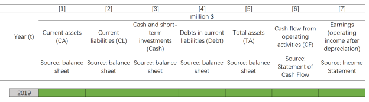
After inputting the information, you will see the results on the right-bottom of the sheet (an example is shown below), including the firm’s accruals in 2019, the average accruals over the past ten years, the accruals error in 2019, and the standard deviation of accruals errors over the past ten years. Moreover, the position of these statistics in the firm’s industry and the whole market is also presented. Q1 indicates a very low level (belong to the 1 st quarter, or the bottom 25%), Q2 indicate a low level ( belongs to the 2 nd quarter), Q3 indicates a high level (belongs to the 3 rd quarter), and Q4 indicates a very high level (belongs to the 4 thd quarter, or the top 75%).
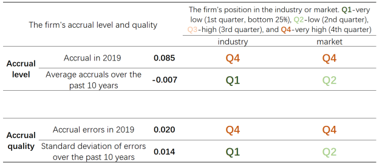
Appendix: regression models
To measure earnings and accrual quality, we regress accruals on cash flow realization using the following model 1 :
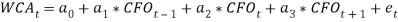
-
 : working-capital accruals (defined by Eq.1) in year t.
Specifically,
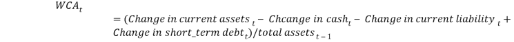
.<
/li>
: working-capital accruals (defined by Eq.1) in year t.
Specifically,
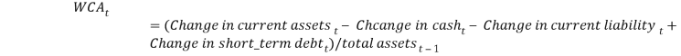
.<
/li>
- 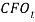 : cash flow from operating activities as reported in the Statement of Cash Flow in year t , scaled by lagged total assets.
This model can be estimated at the firm-specific level. That’s, run an OLS regression for a firm using its current and past annual data (requiring a minimum of five observations) 1 .
The error term 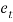 thus captures the extent to which accruals map into cash flow realizations. A high value indicates poor cash flow realization. The standard deviation of the time-series errors thus can be used as a measure of accrual and earnings quality. A high standard deviation indicates low quality.
If accruals are defined to further incorporate depreciation, then we can estimate the accrual quality by alternatively using the following model 2 :
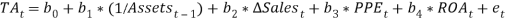
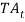 : Accruals (defined by Eq.2) in year t. Specifically, 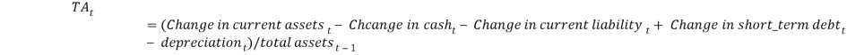 .
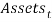 : Total assets in year t.
 : Change in sales in year t, scaled by total assets in year t-1.
: Change in sales in year t, scaled by total assets in year t-1.
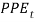 : Net property, plant and, equipment in year t, scaled by total assets in year t-1.
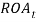 : Net income scaled by total assets in year t.
The error term captures the quality of accruals. A higher value indicates there is greater discretion involved in the accrual estimation and thus lower earnings quality.
Reference
1 Dechow, P. M. & Dichev, I. D. The quality of accruals and earnings: The role of accrual estimation errors. The Accounting Review 77 , 35-59 (2002).
2 Kothari, S. P., Leone, A. J. & Wasley, C. E. Performance matched discretionary accrual measures. Journal of Accounting and Economics 39 , 163-197 (2005).